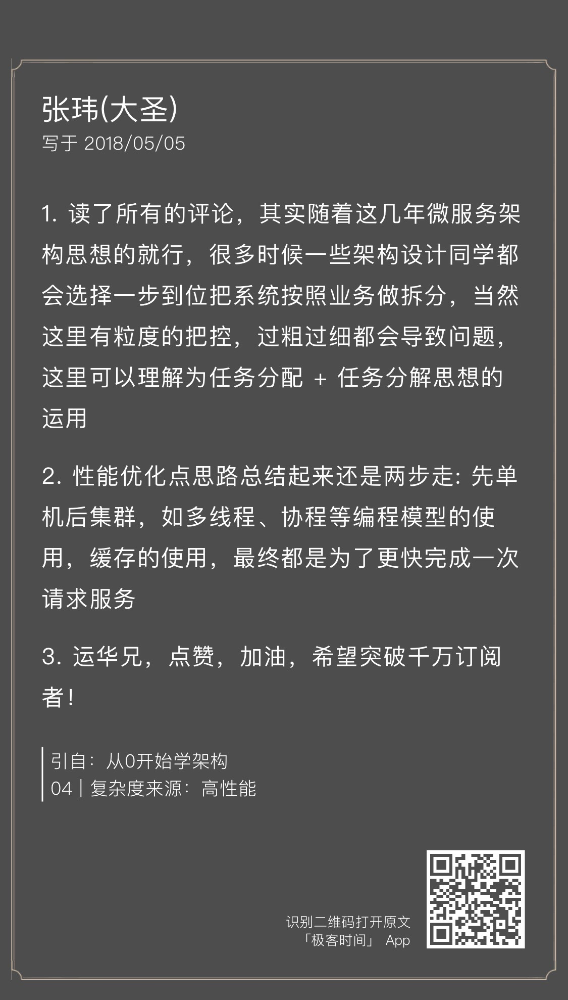
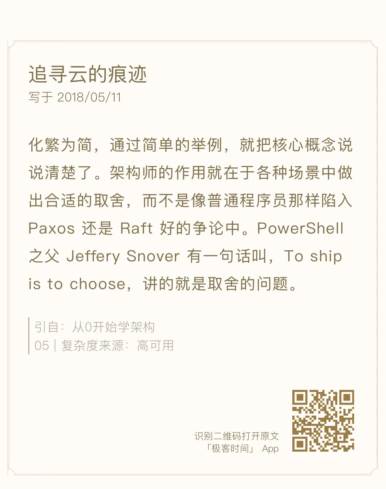

- 00 开篇词 照着做，你也能成为架构师！.md.html
- 01 架构到底是指什么？.md.html
- 02 架构设计的历史背景.md.html
- 03 架构设计的目的.md.html
- 04 复杂度来源：高性能.md.html
- 05 复杂度来源：高可用.md.html
- 06 复杂度来源：可扩展性.md.html
- 07 复杂度来源：低成本、安全、规模.md.html
- 08 架构设计三原则.md.html
- 09 架构设计原则案例.md.html
- 10 架构设计流程：识别复杂度.md.html
- 11 架构设计流程：设计备选方案.md.html
- 12 架构设计流程：评估和选择备选方案.md.html
- 13 架构设计流程：详细方案设计.md.html
- 14 高性能数据库集群：读写分离.md.html
- 15 高性能数据库集群：分库分表.md.html
- 16 高性能NoSQL.md.html
- 17 高性能缓存架构.md.html
- 18 单服务器高性能模式：PPC与TPC.md.html
- 19 单服务器高性能模式：Reactor与Proactor.md.html
- 20 高性能负载均衡：分类及架构.md.html
- 21 高性能负载均衡：算法.md.html
- 22 想成为架构师，你必须知道CAP理论.md.html
- 23 想成为架构师，你必须掌握的CAP细节.md.html
- 24 FMEA方法，排除架构可用性隐患的利器.md.html
- 25 高可用存储架构：双机架构.md.html
- 26 高可用存储架构：集群和分区.md.html
- 27 如何设计计算高可用架构？.md.html
- 28 业务高可用的保障：异地多活架构.md.html
- 29 异地多活设计4大技巧.md.html
- 30 异地多活设计4步走.md.html
- 31 如何应对接口级的故障？.md.html
- 32 可扩展架构的基本思想和模式.md.html
- 33 传统的可扩展架构模式：分层架构和SOA.md.html
- 34 深入理解微服务架构：银弹 or 焦油坑？.md.html
- 35 微服务架构最佳实践 - 方法篇.md.html
- 36 微服务架构最佳实践 - 基础设施篇.md.html
- 37 微内核架构详解.md.html
- 38 架构师应该如何判断技术演进的方向？.md.html
- 39 互联网技术演进的模式.md.html
- 40 互联网架构模板：存储层技术.md.html
- 41 互联网架构模板：开发层和服务层技术.md.html
- 42 互联网架构模板：网络层技术.md.html
- 43 互联网架构模板：用户层和业务层技术.md.html
- 44 互联网架构模板：平台技术.md.html
- 45 架构重构内功心法第一式：有的放矢.md.html
- 46 架构重构内功心法第二式：合纵连横.md.html
- 47 架构重构内功心法第三式：运筹帷幄.md.html
- 48 再谈开源项目：如何选择、使用以及二次开发？.md.html
- 49 谈谈App架构的演进.md.html
- 50 架构实战：架构设计文档模板.md.html
- 51 如何画出优秀的软件系统架构图？.md.html
- 加餐｜业务架构实战营开营了.md.html
- 加餐｜单服务器高性能模式性能对比.md.html
- 加餐｜扒一扒中台皇帝的外衣.md.html
- 如何高效地学习开源项目 华仔，放学别走！ 第3期.md.html
- 新书首发 《从零开始学架构》.md.html
- 架构专栏特别放送 华仔，放学别走！ 第2期.md.html
- 架构专栏特别放送 华仔，放学别走！第1期.md.html
- 架构师必读书单 华仔，放学别走！ 第5期.md.html
- 架构师成长之路 华仔，放学别走！ 第4期.md.html
- 结束语 坚持，成就你的技术梦想.md.html
- 捐赠
架构专栏特别放送 华仔，放学别走！第1期
各位同学，晚上好，我就是那位在每期专栏最后都会乱入进来的编辑Shawn[捂脸]，对，我是来送福利的。
“从0开始学架构”专栏已经更新了9期，概念和基础已经讲了不少，不知道你掌握的如何呢？每期华仔都会在最后提出一个思考题，希望能让你在学习后有一个思考提升的过程，既可以记下心得体会，也许还能碰撞出新的想法。
以周为单位，今天我会让华仔选出01-07期的优质精选留言，送给入选的同学价值68元的专栏阅码作为鼓励。入选的留言的标准既可以是经过深度思考的回答，也可以是对其他同学有启发的经验分享，更可以是产生共鸣的疑问。
在公布上榜精选留言前，应广大同学的强烈呼声“华仔，放学别走！”，问他几个在评论中大家普遍感兴趣的问题。
Shawn：看到有同学提到“能看到资深技术专家的分享实属不易，感觉自己像是站在巨人的肩膀上学习，机会难得”，华仔你是怎么看待知识分享的？
华仔：首先，知识分享能够促进知识的传播和发展，其实我们都是站在前人的肩膀上才能有今天的成就；其次，知识分享对于作者来说也是一个自我提升的过程，很多知识和技术，没分享出来的时候我觉得自己很清楚了，但真正去写才会发现，这里有个细节没考虑，那里有个疑问需要澄清，只有真正写完了才会觉得自己基本掌握了；同时分享出去后，会有很多读者帮忙审核检阅，会提出自己的一些看法，通过这些交流又能够进一步加深理解。
所以很多朋友问我怎么提升技术，我推荐的一个方法就是写博客，既能够加深自己对知识的理解，又能够锻炼自己的表达能力，还能够磨练自己的意志力（坚持写很不容易），一举三得。某个方面的博客写多了，也许哪天你也能够出一个专栏。
Shawn：华仔，现在专栏更新到第9期，还在讲理论和基础，已经有同学提出想学实战技巧，你怎么看待理论与实践之间的关系？
华仔：架构设计也需要知行合一，知是行之始，行是知之成，所以我在开始的时候讲述了架构设计相关的理论知识，例如架构设计的本质、目的、原则等，只有掌握了这些内容，才能在架构设计实践的时候有理可依有据可循，而不是凭感觉、拍脑袋、照猫画虎等。其实架构设计和编程一样，我们要学Java编程，肯定要先熟悉Java的语法、API，然后才能开始编码，再通过实际编码实践加深对这些理论知识的理解。
我在带团队的时候，发现很多技术人员在做架构设计的时候，最缺乏的就是架构设计的理论体系，在设计的时候摸着石头过河，踩了一个坑就积累了一点经验，但是下次换个业务换个场景，又要踩其他坑。这也是我萌生写这样一个专栏的一个推动因素，因为我们的学校没有教架构相关的课程，架构领域也缺乏经典的体系化的书籍，导致技术人员在架构方面的能力提升速度较慢。
具体的实战技巧其实不用担心，专栏后面的内容大部分都是讲具体的实战技巧，例如高性能架构模式、高可用架构模式、FMEA、CAP、异地多活、互联网架构演进等。
Shawn：介绍一下你每天学习新知识的方式吧，或者你觉得怎样学习你的架构专栏，效果会更好？
华仔：我是坐地铁上班，一般我都是在地铁上看书或者看专栏，晚上睡觉前和周末也会挤出时间来看书或者学习，更详细的做法可以参考我的一个公开演讲稿《吃的草够多，你也能成为大牛》。
我的专栏是我自己多年经验和思考的总结积累，是一套完整的架构设计方法论，涵盖的内容较多，所以要想学好，首先不能着急，循序渐进，争取每篇都有一些收获，可以尝试写一些笔记、心得；其次需要知行合一，学习了专栏的内容后，尽量结合自己的业务和系统，尝试拿这套方法论去分析，看看有什么收获或者疑问，注意并不是一定要亲自做架构才能实践，针对已有的系统进行分析，学习业界已有的架构案例都可以，当然如果有实践机会那就更好；第三多交流，一个人的思维难免有局限性和思维盲点，如果能和同事或者朋友一起学习，然后一起讨论，互相印证，效果会更好。
Shawn：总有同学在问专栏以外有没有推荐的参考书或资料，华仔能不能推荐几种？
华仔：技术方面我推荐《UNIX编程艺术》，这本书里面的思想和原则，无论对于编码还是架构设计都很有指导意义。
个人成长方面我推荐《异类》，这本书通过很多的案例来说明究竟怎么样才能成功，10000小时理论只是其中的一部分，还有很多有趣的发现，例如如何才算赢在起跑线上等。
人生境遇方面我推荐《羊皮卷》，其中有一篇《选择的力量》，我看了后醍醐灌顶，真的是就像佛家禅宗说的突然“悟道”一样深受启发，从此以后很多为人处世方式都因此而改变了。
Shawn：看到那么多同学的留言，有什么想说的吗？
华仔：非常感谢每一位同学的积极参与，很多同学留言表示感谢，让我感到很开心，说明专栏能够真正帮助大家学习架构设计的技术和提升自己的能力。
很多同学的评论内容质量很高，感谢你们的分享，通过自己的思考，自己有收获，同时也能帮助其他同学。
也有很多同学基于自己的业务进行了思考和提出了一些疑问，这是非常好的学习方式，也是知行合一的一种行动方式，我也会尽量一一回复，帮助你解决一些实际的问题。
再次感谢你对架构专栏的厚爱，让我们一起加油，一起成长！
留言精选
华仔：做技术里面最擅长讲故事的，讲故事里面最擅长做技术的，说的就是你 ：）
华仔：说的这么好，除了赞同就是鼓掌了 ：）
华仔：用马哲来思考架构设计，我表示这高度我要仰望一下 ：）

华仔：实现财富自由，迎娶白富美，当上CTO，走向人生巅峰，就靠你的第3句话了 ：）

华仔：感谢，我要去查查这位大神，学习一下。
华仔：非常好的实践方法，我们在架构设计流程中会讲到，就是指设计“备选方案”。
华仔：其实我最开始构思的时候是想写一本架构师工作指南，包括技术、管理、沟通等，后来发现目标太宏伟，时间精力有限，最后决定还是聚焦技术，你说的内容非常对，架构师在设计的时候还要考虑团队人员和组织的复杂度和能力水平。
© 2019 - 2023 Liangliang Lee. Powered by gin and hexo-theme-book.